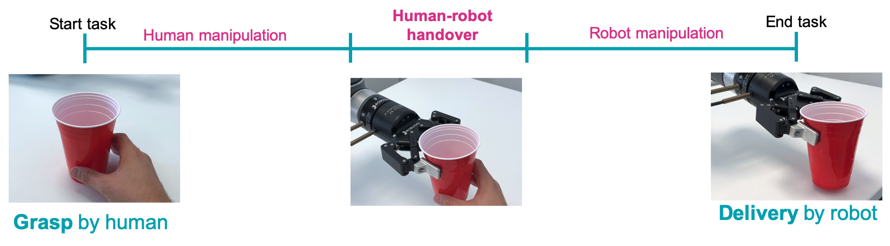
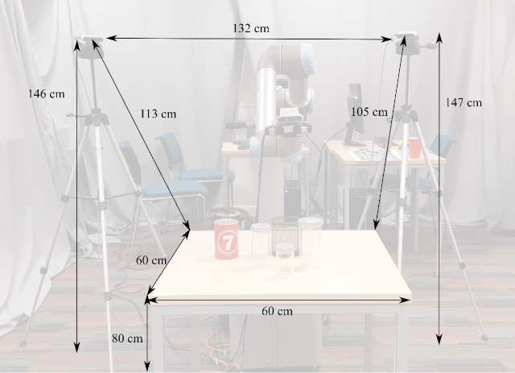

The task consists of three steps, namely human manoeuvring, dynamic handover, and robot manoeuvring. Any individual that is asked to volunteer and perform the handover task is referred to as a subject. The subject is instructed to handover the container naturally (i.e. with no intention to help or make it difficult for the robot), standing opposite to the robot across the table, which should be covered with a white table-cloth.

The subject grasps a (filled or empty) object from a table and hands the object over to a robot arm that must infer the object properties on-the-fly. The subject should carry the container to a location that is roughly constrained by the reachability of the arm, i.e., the location is reachable by the robotic arm but also comfortable for the subject to perform the handover naturally. After the handover, the robot delivers the object upright within a predefined area (e.g. same table or a near table).
We define a configuration as the execution of the human-to-robot handover task with a predefined combination of a container with a content type and amount. All the configurations shall be executed by the subject using the same hand with a natural grasp. Prior to the execution of each configuration, the container (filled with its content, if any) should be placed on a predefined location on the table and at a distance that is not reachable by the robotic arm.
Participants will perform a predefined number of configurations. . Based on previous editions, we expect that each configuration should be executed within 5 s, and the preparation and execution of all configurations, and measuring the mass of the delivered container should take no longer than 30 min for each team. Configurations will be split into groups of different degrees of difficulty based on the physical property of the container and the filled content.
The setup includes a robotic arm with at least 6 degrees of freedom (e.g. UR5, KUKA) and equipped with a 2-finger parallel gripper (e.g. Robotiq 2F-85); a table where the handover is happening as well as where the robot is placed; selected containers and contents; up to two cameras (e.g. Intel RealSense D435i); and a digital scale to weigh the container. The table can be covered by a white table-cloth. The two cameras should be placed at 40 cm from the robotic arm, e.g. using tripods, and oriented in such a way that they both view the centre of the table. Eventually, the setup may include a second table behind the robot for delivering the object in a targeted area (unless the same table where the handover is happening is used).
For safety, a second person (e.g. from the team) must be ready to stop the robot in case of an anomalous behaviour.


Fig.1: Example of setup with a UR5 robotic arm equipped with Robotiq 2F-85 gripper and two Intel RealSense cameras mounted on a tripod and placed at the sides of the robot, while being oriented towards the table where the handover of an unknown container with unknown content will happen. The table has the following dimensions in the 3D layout: W1800 x D600 x H700 mm (dimensions of the provided tables in Vienna might differ).